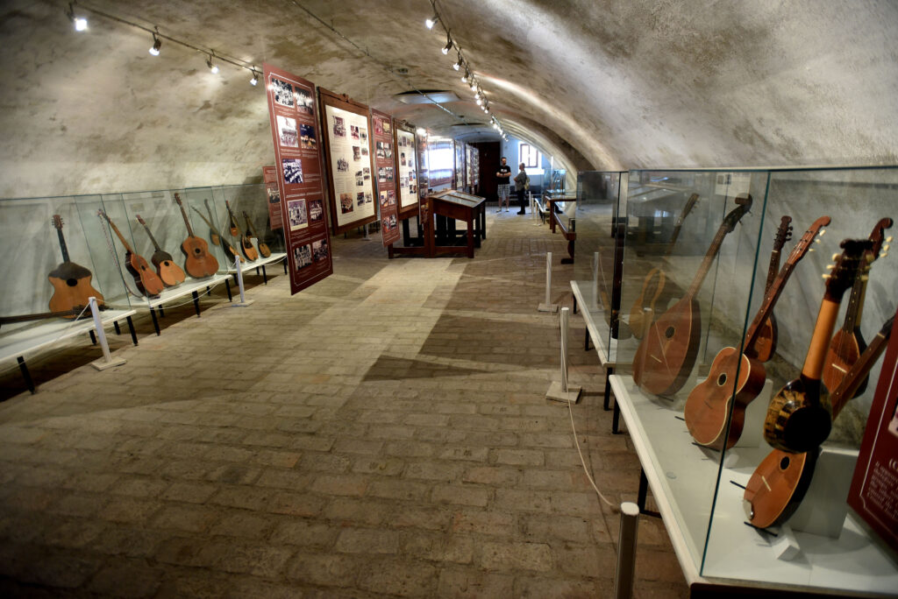

Općenito o Kući Tambure
Kuća Tambure smještena je u sklopu Tvrđave Brod i posvećena je bogatoj tradiciji tambure, jednog od prepoznatljivih simbola slavonske glazbene baštine.
Kroz vrijednu zbirku tamburaških instrumenata, multimedijalne sadržaje i interaktivne postave, posjetitelji mogu upoznati razvoj tambure, njezinu izradu i važnost u kulturnom životu Slavonije.
Isprobajte tambure
Povucite instrument na svirača i otkrijte kako svaki instrument zvuči.
Odaberite instrument za sviranje.